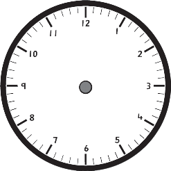
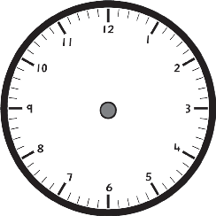
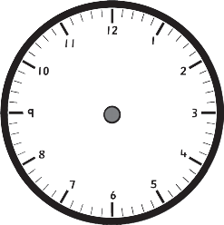
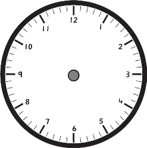

Mathematics Pupil’s Book Standard Three
3.
Draw arrows on the following clock faces to show the time indicated:
(a)

5 minutes past 7
(7:05)
(b)

35 minutes past 2
(2:35)
(c)

55 minutes past 6 or 5 minutes to 7
(6:55)
(d)

45 minutes past 2 or Quarter to 3
(2:45)
Draw your answer
Clear drawing